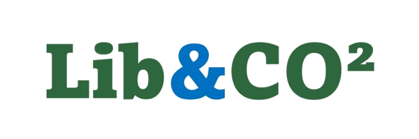
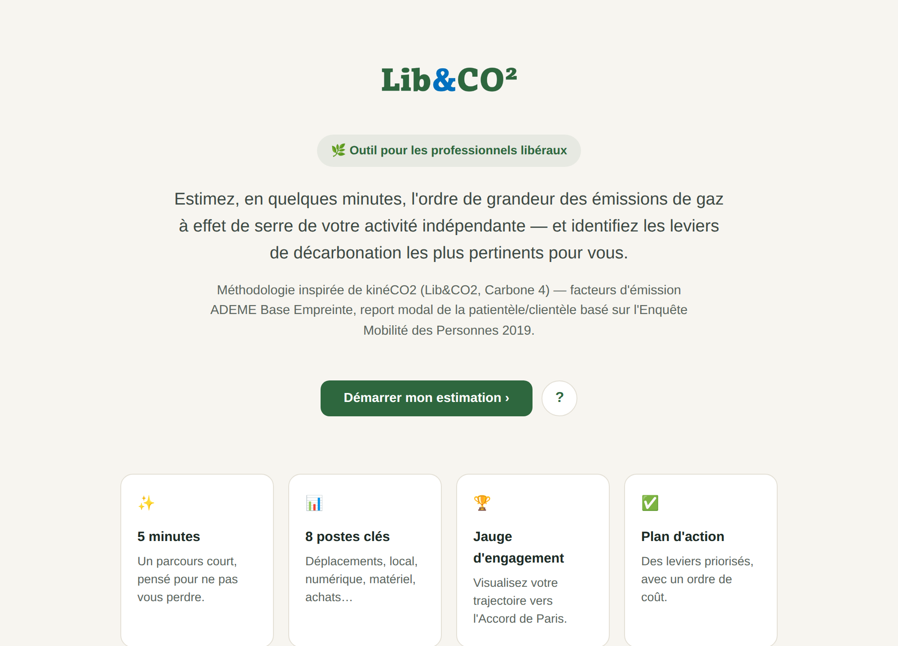
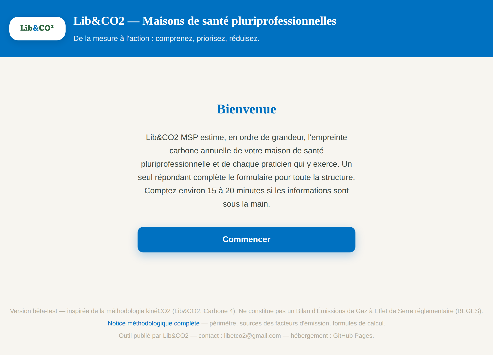
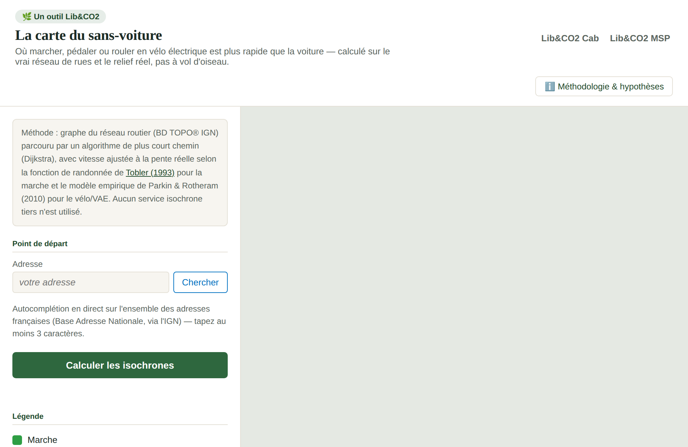

Rendre la mesure carbone accessible à tous les professionnels libéraux
Lib&CO2 conçoit des outils gratuits, open source et entièrement sourcés pour aider les cabinets et structures de santé, juridiques, de conseil ou d'architecture à comprendre et réduire leur empreinte environnementale — sans jargon, sans coût, en quelques minutes.
Notre conviction
On ne pilote bien que ce que l'on mesure. Les professionnels libéraux représentent une part importante de l'activité économique française, mais disposent rarement du temps ou du budget pour réaliser un bilan carbone classique. Lib&CO2 est né pour combler cet écart : donner à chaque praticien un ordre de grandeur fiable de son impact, gratuitement, pour prioriser ses efforts plutôt que de deviner.
Chaque facteur d'émission utilisé est documenté et sourcé (ADEME, INSEE, SDES, GIEC), avec une distinction claire entre ce qui est vérifié et ce qui reste estimé — une exigence de transparence rare pour un outil gratuit.
Nos outils
Trois outils gratuits, développés sous le même projet, avec la même exigence de transparence méthodologique.

Lib&CO2 Cab
Le calculateur pour les professionnels libéraux individuels : santé, juridique, conseil, architecture, artisanat d'art... Estimez votre empreinte annuelle et votre ratio par acte en moins de 8 minutes, avec un plan d'action priorisé.
Ouvrir l'outil ›
Lib&CO2 MSP
Le calculateur pensé pour les maisons de santé pluriprofessionnelles (MSP) : une version collective de la démarche, un seul répondant pour toute la structure, avec un indicateur de dépendance aux énergies fossiles et un plan d'action par praticien.
Ouvrir l'outil ›
La carte du sans-voiture
Calculez, autour de votre cabinet, les zones où marcher, pédaler ou rouler en vélo électrique est plus rapide qu'y venir en voiture — sur le vrai réseau de rues et le relief réel. Un outil pour orienter concrètement votre patientèle vers la mobilité douce.
Ouvrir l'outil ›🤖 CO² — Par souci de cohérence avec notre propre démarche : chacun de ces outils a été développé avec l'aide de l'intelligence artificielle (Claude, Anthropic). Le coût carbone de ce développement est estimé à environ 1,2 kg CO2e par outil — une estimation haute, fondée sur des fourchettes publiées faute de données officielles communiquées par les fournisseurs de ces modèles, à mettre en perspective avec les kilogrammes économisés par les actions que ces outils permettent d'identifier.
Être accompagné
Les outils sont gratuits et le resteront. Pour aller plus loin — fiabiliser un bilan, construire un plan d'action, mobiliser une équipe ou tout un réseau — Lib&CO2 propose aussi un accompagnement, pour les petites structures comme pour les institutions.
Diagnostic accompagné et plan d'action
Pour une maison de santé, un cabinet de groupe, une CPTS ou toute petite structure : bilan réalisé ensemble à partir de vos données réelles, priorités chiffrées, plan d'action concret et suivi d'une année sur l'autre.
Écrire à ce sujet ›Institutions et réseaux
Pour une URPS, une ARS, une fédération, un ordre ou une collectivité : déploiement des outils sur un réseau de structures, campagne de mesure, restitution collective et indicateurs de suivi.
Écrire à ce sujet ›Formation et ateliers
Sensibilisation ou atelier pratique pour une équipe ou un réseau de professionnels : comprendre d'où viennent les émissions d'un cabinet et repartir avec des actions adaptées à son métier.
Écrire à ce sujet ›Cartes du sans-voiture imprimées
Cartes calculées pour une ou plusieurs adresses, imprimées en grand format (affiche, panneau rigide, bâche ou toile) et livrées directement sur place : salle d'attente, gare, mairie, magasin.
Écrire à ce sujet ›Un premier échange, sans engagement, permet de voir si et comment Lib&CO2 peut vous être utile. Chaque lien ouvre votre messagerie avec une courte trame à compléter : rien n'est envoyé sans vous.
Le projet Lib&CO2
Une démarche construite dans la continuité d'un premier projet national de référence.
KinéCO2
Lib&CO2 a participé au projet national KinéCO2, porté par plusieurs Unions Régionales des Professionnels de Santé (URPS) et déployé avec la méthodologie du cabinet MyCO2 (Carbone 4). Un panel de plus d'une centaine de cabinets de masso-kinésithérapie répartis sur toute la France a permis de mesurer, pour la première fois, l'empreinte carbone réelle d'une séance de kinésithérapie libérale — et d'identifier des pistes d'action réalistes pour la profession.
→ La sensibilisation sur l'empreinte carbone | MyCO2 par Carbone 4Généralisation à l'ensemble des professions libérales
Fort de cette première expérimentation, Lib&CO2 SASU a généralisé la démarche au-delà de la kinésithérapie : santé, juridique, conseil, architecture, artisanat d'art. C'est ainsi qu'est né Lib&CO2 Cab, puis Lib&CO2 MSP pour les structures collectives.
En septembre 2026 s'y ajoute La carte du sans-voiture : le premier poste d'émissions d'un cabinet est souvent le trajet de ses patients ou clients. La carte montre, autour d'une adresse, où la marche, le vélo et le vélo électrique battent la voiture, calculé sur le réseau de rues et le relief de l'IGN. Elle s'imprime en grand format pour une salle d'attente, une gare ou un bâtiment public.
Une question, un projet ?
Praticien, structure collective, institution ou simplement curieux du projet : nous répondons à tous les messages.
✉️ libetco2@gmail.com